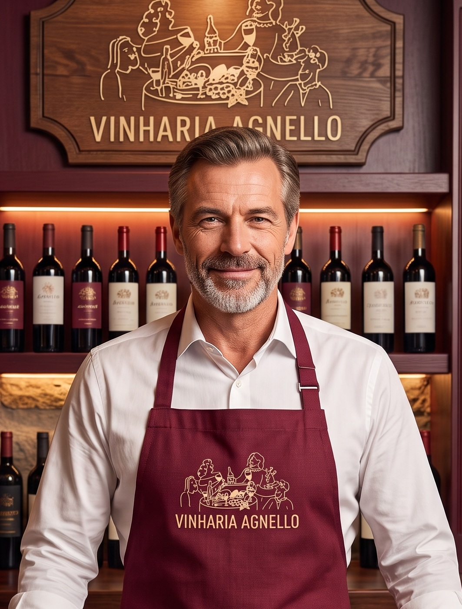

Fundador

Sr. Giulio Agnello
Proprietário e Sommelier Sênior (Gestão Tradicional)
Especialidade: Relacionamento humano próximo, curadoria de safras clássicas e consultoria gastronômica tradicional há mais de 15 anos.